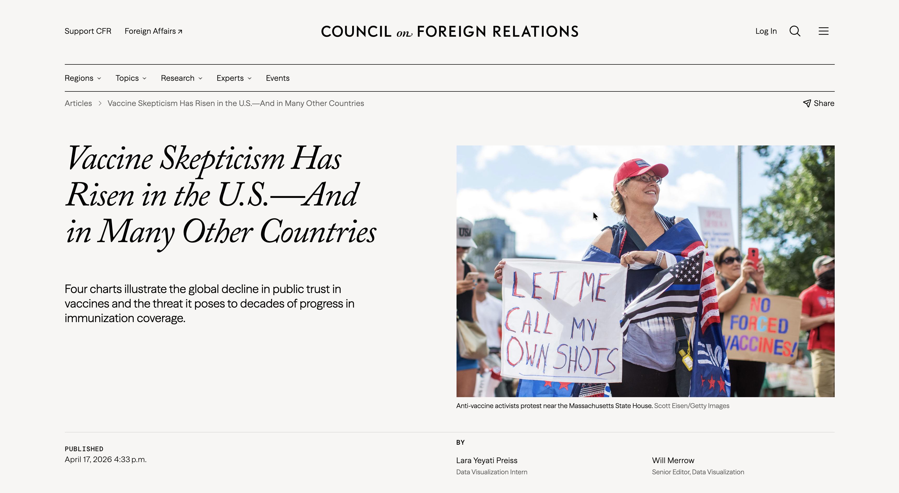

Graphic article on the global decline in trust in vaccines and the threat it poses to decades of progress in immunization coverage. The piece combines cross-country public opinion data with long-run vaccination and measles trends to show how confidence, coverage, and disease burden do not always move together.
Read full article ↗
Vaccination is one of the most successful global health interventions in history — but that success is increasingly under pressure. Trust in vaccine safety has declined in most countries surveyed since 2015, deepened during the COVID-19 pandemic, when debates over mandates intensified and spread to routine vaccines, amplified by a surge of health misinformation.. The piece traces what that erosion looks like across countries, how it relates to actual coverage, and the risk it poses to global health systems.
I co-authored the article and designed the accompanying charts with Will Merrow, Associate Director of Data Visualization at CFR. The work involved shaping the narrative arc, defining the comparative frames, and translating multiple public-health datasets into a visual sequence that remains clear without flattening the complexity of the issue.